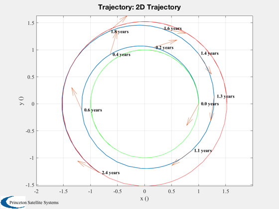
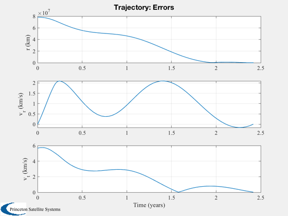
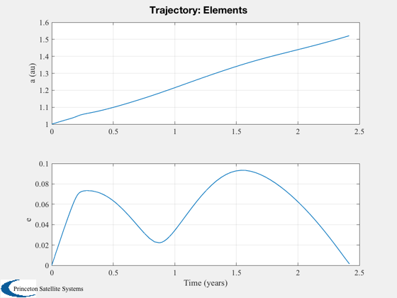

Demonstrate the Trajectory optimization function for sails in 2D orbits.
Choose either Simplex or genetic algorithms. Select either a Mars transfer or the planar portion of Solar Polar Imager (SPI). Choose either Simplex or GA for each run at the top of the script. Assumes a perfectly specular sail.
Functions demonstrated: TwoDOptimalSailAngle RHSOpt2DOrbit Plot2DTrajectory CostSail2D TrajectoryOptimization
Since version 7. ------------------------------------------------------------------------ See also Constant, Planets, heuristicXover, nonUnifMutation, normGeomSelect, Plot2DTrajectory, TwoDOptimalSailAngle, CostSail2D, TrajectoryOptimization, RHSOpt2DOrbit ------------------------------------------------------------------------
Contents
%------------------------------------------------------------------------------- % Copyright (c) 2005-2006 Princeton Satellite Systems, Inc. % All rights reserved. %------------------------------------------------------------------------------- disp('This demo takes several minutes to run.') %%%%%%%%%%%%%%%%%%%%%%%%%%%%% % User input method = 1; % 1, simplex 2, genetic algorithms mission = 'mars'; % 'spi' or 'mars' %%%%%%%%%%%%%%%%%%%%%%%%%%%%%
This demo takes several minutes to run.
On the next pass use the newly computed lambda as the first guess
%------------------------------------------------------------------ d.repeat = 0; aU = Constant('au'); c = Constant('speed of light');
Spacecraft properties
%----------------------
This assumes 100 kg mass, 160x160 m sail
%----------------------------------------- area = 160^2; mass = 350; % acceleration is premultiplied by au^2 for scaling in RHS d.d.accel = area*1367*1e-6/(c*mass)*aU^2; % km/sec^2 d.d.sailAngleFun = @TwoDOptimalSailAngle;
Heliocentric system
%--------------------- d.d.mu = Constant('mu sun');
Dynamics function
%------------------
d.d.rhsFun = @RHSOpt2DOrbit;
d.d.plotFun = @Plot2DTrajectory;
Cost function called by optimizer
%----------------------------------
d.d.costFun = @CostSail2D;
Initial costate guess
%---------------------- % Boundary conditions, initial and final state
[r;rDot;v;m]
%--------------------------------------------- switch mission case 'spi' rF = 0.48*aU; lambda0 = [0.151216557215921; 24176.8510939925; 803052.637561317 ]; nDays = 2.5*365; case 'mars' [name,rF] = Planets('rad',4); rF = rF(1)*aU; lambda0 = [-0.001047975499; 21925.68149; 201476.7856]; nDays = 2.7*365; end d.d.x0 = [aU;0;sqrt(d.d.mu/aU)]; d.d.xF = [rF;0;sqrt(d.d.mu/rF)]; d.d.rF = d.d.xF(1); d.d.lambda0 = lambda0;
Integration (ode113) parameters
%-------------------------------- d.d.data.absTol = 1e-8; d.d.data.relTol = 2.5e-6; d.d.data.maxStep = 0.1; % ode113 will never take a step bigger than this % fraction of the end time d.d.tEnd = nDays*86400; % (s)
Weights for the costates
%------------------------- d.d.errorScale = [d.d.xF(3)/d.d.xF(1); 1; 1]; switch method case 1 %----------------------------- % 1. Downhill simplex (fmins) %----------------------------- d.method = 'downhill simplex'; % Simplex parameters %------------------- d.d.stateTol = 1e-4; d.d.funTol = 1e-2; d.d.nIts = 600; % Optimize the trajectory. It will used Plot2DTrajectory % to plot the results %------------------------------------------------------- lambda = TrajectoryOptimization( d ); disp('Costates for Simplex') disp(lambda{1}) case 2 %----------------------------- % 2. Genetic algorithm (GAOT) %----------------------------- d.method = 'genetic algorithm'; % The number of individuals %-------------------------- d.d.nI = 40; % The number of generations %-------------------------- d.d.nG = 35; % The bounds on the costate %-------------------------- d.d.bounds = [-10 10; 1e6*[-1 1; -1 1]]; % The selection function %----------------------- d.d.fncSelect = @normGeomSelect; d.d.optSelect = [0.01]; % The crossover function %----------------------- d.d.fncXOver = @heuristicXover; d.d.optXOver = [40 5 ]; % The mutation function %---------------------- d.d.fncMutate = @nonUnifMutation; d.d.optMutate = [10 d.d.nG 3]; % Optimize %--------- lambda = TrajectoryOptimization( d ); disp('Costates for Genetic Algorithm') disp(lambda{1}) end %-------------------------------------- % PSS internal file version information %--------------------------------------
Case 1: Method: downhill simplex
Iteration Func-count min f(x) Procedure
0 1 2.7486
1 4 2.74563 initial simplex
2 9 2.74563 shrink
3 10 2.74563 reflect
4 11 2.74563 reflect
5 13 2.74507 expand
6 15 2.74403 expand
7 17 2.74403 contract inside
8 19 2.74403 contract inside
9 21 2.7431 expand
10 22 2.7431 reflect
11 24 2.74106 expand
12 25 2.74106 reflect
13 27 2.73724 expand
14 29 2.73705 reflect
15 30 2.73705 reflect
16 32 2.72754 expand
17 33 2.72754 reflect
18 35 2.72077 expand
19 37 2.69752 expand
20 38 2.69752 reflect
21 40 2.65726 expand
22 42 2.51974 expand
23 43 2.51974 reflect
24 45 2.23779 expand
25 47 2.13384 contract outside
26 49 2.13384 contract inside
27 51 2.13384 contract inside
28 53 2.13384 contract inside
29 55 2.13384 contract inside
30 57 2.13384 contract inside
31 59 2.13384 contract inside
32 60 2.13384 reflect
33 62 2.13384 contract inside
34 64 2.13354 contract inside
35 66 2.13238 contract outside
36 68 2.11548 expand
37 70 2.11548 contract inside
38 71 2.11548 reflect
39 72 2.11548 reflect
40 74 2.10853 expand
41 76 2.09825 expand
42 78 2.05926 expand
43 80 2.01562 expand
44 82 2.0131 reflect
45 84 1.92541 reflect
46 86 1.27801 expand
47 87 1.27801 reflect
48 89 1.27801 contract inside
49 90 1.27801 reflect
50 92 1.27801 contract inside
51 94 0.486897 reflect
52 96 0.486897 contract inside
53 97 0.486897 reflect
54 99 0.486897 contract inside
55 100 0.486897 reflect
56 102 0.486897 contract inside
57 104 0.283709 contract inside
58 105 0.283709 reflect
59 107 0.283709 contract inside
60 108 0.283709 reflect
61 109 0.283709 reflect
62 111 0.223843 reflect
63 113 0.223843 contract inside
64 115 0.223843 contract inside
65 117 0.132836 reflect
66 119 0.132836 contract outside
67 121 0.118953 contract inside
68 123 0.106716 contract inside
69 125 0.0780875 contract inside
70 127 0.0637931 contract inside
71 129 0.0637931 contract inside
72 131 0.0637931 contract inside
73 133 0.0637931 contract inside
74 135 0.0354368 expand
75 137 0.0354368 contract inside
76 139 0.0260392 contract outside
77 141 0.0260392 contract inside
78 143 0.0260392 contract inside
79 145 0.0207826 contract inside
80 150 0.0207826 shrink
81 152 0.0207826 contract outside
82 157 0.0207826 shrink
83 158 0.0207826 reflect
84 160 0.0207826 contract inside
85 162 0.0207826 contract outside
86 163 0.0207826 reflect
87 165 0.0207826 contract outside
88 167 0.0207826 contract inside
89 169 0.0207826 contract inside
90 174 0.0207826 shrink
91 179 0.0207826 shrink
92 180 0.0207826 reflect
93 182 0.0207826 contract inside
94 184 0.0207826 contract inside
95 185 0.0207826 reflect
96 187 0.0205148 expand
97 189 0.0200609 expand
98 191 0.0200609 contract inside
99 193 0.0197296 expand
100 195 0.0197296 contract inside
101 197 0.0192068 expand
102 199 0.0184014 expand
103 201 0.0184014 contract inside
104 203 0.0184014 contract inside
105 205 0.0184014 contract inside
106 206 0.0184014 reflect
107 208 0.0184014 contract inside
108 210 0.0184014 contract inside
109 212 0.0184014 contract inside
110 214 0.0184014 contract inside
111 216 0.0184014 contract inside
112 218 0.0184014 contract inside
113 220 0.0184014 contract inside
114 222 0.0184014 contract inside
115 223 0.0184014 reflect
116 225 0.0184014 contract inside
117 227 0.0184014 contract inside
118 229 0.0184014 contract inside
119 231 0.0184014 contract inside
120 233 0.0184014 contract inside
121 235 0.0184014 contract inside
122 237 0.0184014 contract inside
123 239 0.0183908 reflect
124 241 0.0183908 contract inside
125 243 0.0183908 contract inside
126 245 0.0183908 contract inside
127 247 0.0183897 reflect
128 249 0.0183897 contract inside
129 251 0.0183897 contract inside
130 253 0.0183856 reflect
131 255 0.0183856 contract inside
132 257 0.0183856 contract inside
133 258 0.0183856 reflect
134 260 0.0183856 contract inside
135 262 0.0183856 contract inside
136 264 0.0183846 reflect
137 266 0.0183846 contract inside
138 268 0.0183846 contract inside
139 270 0.0183846 contract inside
140 272 0.0183845 reflect
141 274 0.0183845 contract inside
142 276 0.0183845 contract inside
143 278 0.0183841 reflect
144 280 0.0183841 contract inside
145 282 0.018384 reflect
146 284 0.018384 contract inside
147 286 0.018384 contract inside
148 288 0.0183839 reflect
149 290 0.0183839 contract inside
150 292 0.0183839 contract inside
151 294 0.0183838 expand
152 296 0.0183837 reflect
153 298 0.0183837 contract inside
154 300 0.0183837 contract inside
155 302 0.0183837 contract inside
156 304 0.0183837 expand
157 306 0.0183837 contract inside
158 308 0.0183837 contract inside
159 310 0.0183836 reflect
160 312 0.0183836 contract inside
161 314 0.0183836 contract inside
162 316 0.0183836 contract inside
163 318 0.0183836 reflect
164 320 0.0183836 contract inside
165 322 0.0183836 reflect
166 324 0.0183836 contract inside
167 326 0.0183836 contract inside
168 328 0.0183836 contract inside
Optimization terminated:
the current x satisfies the termination criteria using OPTIONS.TolX of 1.000000e-04
and F(X) satisfies the convergence criteria using OPTIONS.TolFun of 1.000000e-02
Radial position error = 696.2113 (km)
Radial velocity error = 0.0089 (km/s)
Tangential velocity error = -0.0161 (km/s)
Time of minimum error = 2.4188 years
Costates for Simplex
-0.0046295
-11610
-21033
  